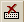

This topic describes the output window that lists all commands that are run in an ASAP session and the output.
On the right side of the Command Output window, the dockable and expandable window displays activity while ASAP runs the commands. Scroll this window to review previous output. ASAP saves many lines of output in the scroll window. The maximum number of lines is specified by the user, and limited only by the amount of available memory. See $GRAB for the total number of lines in the output buffer.
To position the window next to the Command Input window, right-click the Command Output window and select Docking View.
To position the window in the ASAP Workspace area, right-click the Command Output window and deselect Docking View.
To prevent text in the output window from continuing to scroll down as ASAP generates output, right-click in the Command Output window and deselect Lock Scrolling to Output. The Window remains at the current scrolled position, even as output is generated. Scroll to the bottom of the window to view new output.
To view a list of the files in your current working directory, click the Local tab.
To open a menu for either a Local or Remote file, right-click a file name in the Explorer view. Menu commands include Copy, Paste, Delete, Open, and Run.
To restart a kernel process, right-click the computer tab (Local or server) and select Restart Kernel, or click  on the ASAP toolbar.
Right-click in the Command Output window to access a pop-up list of common Windows commands.
You can delete all the text in the Command Output window; however, consistent with other output windows, you cannot delete only a portion of the output text. To clear the current contents of the Command Output window, right-click in the window and select Delete All or press Ctrl-D.
Check the activity in the Command Output window during your work. It not only echoes the commands you send to the ASAP kernel, but also shows warning and error messages to help you identify a problem.
If one or more servers are also open via ASAP Remote, an Explorer view of each computer appears next to the Local tab